For this week, we learned how to use Arduino and we made different types of sensors and interactive technology such as a light that you can change the brightness of. For the first project, I made a potentiometer with the aruduino machine where you can adjust the brightness of the light bulb by rotating the potentiometer. The second one was the photoresister where you have put your finger on the senser to turn on the light. The third one was the RGB Night Light that alternates to different colors of light based off of the photoresistor and potentiometer. The fourth one is a buzzer that buzzes based off the potentiometer. The fifth one is a digital trumpet that makes different sounds from the buzzer when you push the different buttons on the breadboard. The sixth one was a Simon Says Game with the Arduino machine that uses LEDs and the buzzer. The seventh one was a Servo motors that would turn on the motors based off of how much you turn the Potentiometer. The eigth one was a Distance Sensor that changes the color of the light based off the distance of an object fromt the sensor. The ninth one was an LCD "Hello World" that shows the sentence "hello world" on a monitor based off of the potentiometer. The tenth one was a Temperature Sensor that displays the temperature in celsius and farenheit on the monitor. The eleventh game was a DIY "Who Am I" game. The Twelveth one was Motor Basics which shows the motor turning when you send the programming to the Arduino, and the Thirteenth one was adding a second wheel to the robot. Fourteenth one is where we created a Autonomous Robot that would move and navigate itself with the motion sensor.
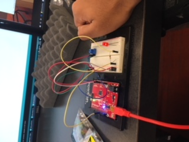 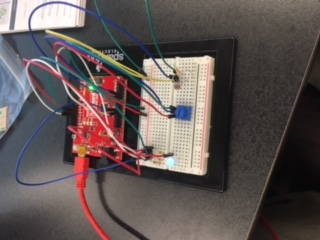 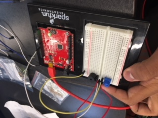 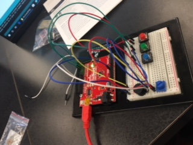 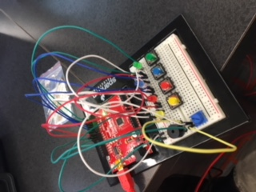 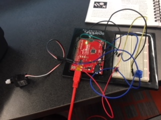 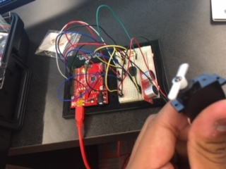 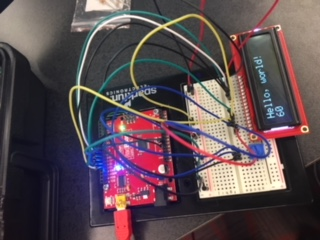 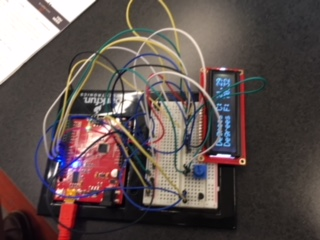 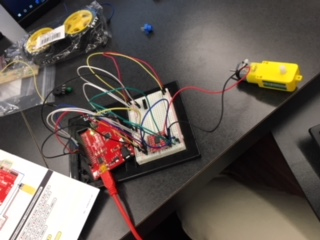 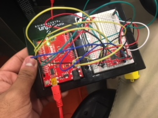 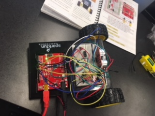